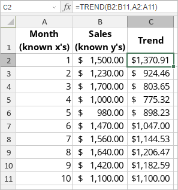

TREND Funkcija
TREND funkcija je jedna od statističkih funkcija. Koristi se za računanje linearne trend linije i vraća vrednosti duž nje koristeći metodu najmanjih kvadrata.
Sintaksa
TREND(known_y’s, [known_x’s], [new_x’s], [const])
TREND funkcija ima sledeće argumente:
| Argument | Opis |
|---|---|
| known_y’s | Skup y-vrednosti koje već znate u jednačini y = mx + b. |
| known_x’s | Opcioni skup x-vrednosti koje možda znate u jednačini y = mx + b. |
| new_x’s | Opcioni skup x-vrednosti za koje želite da se vrate y-vrednosti. |
| const | Opcioni argument. TRUE ili FALSE vrednost gde TRUE ili izostanak argumenta omogućava normalno računanje b, a FALSE postavlja b na 0 u jednačini y = mx + b i m-vrednosti odgovaraju jednačini y = mx. |
Napomene
Napomena: ovo je array formula. Za više informacija pročitajte članak Insert array formulas.
Kako primeniti TREND funkciju.
Primeri
Slika ispod prikazuje rezultat koji vraća TREND funkcija.
